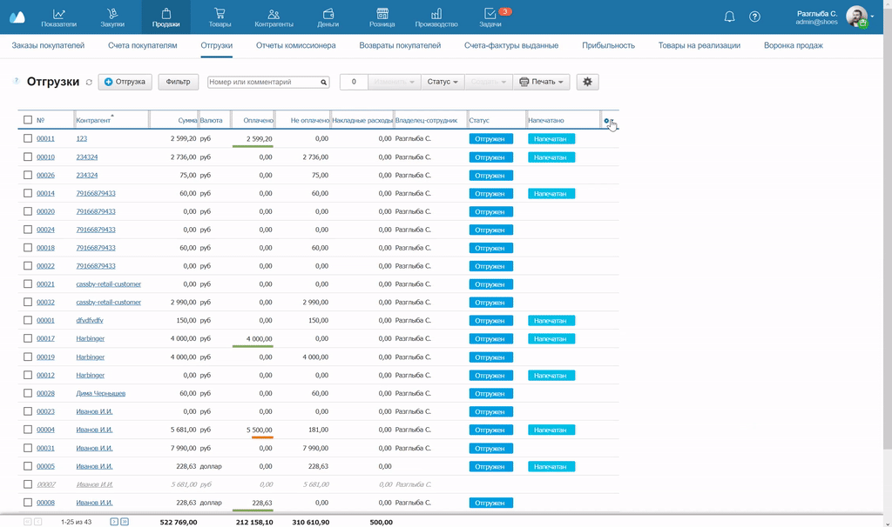
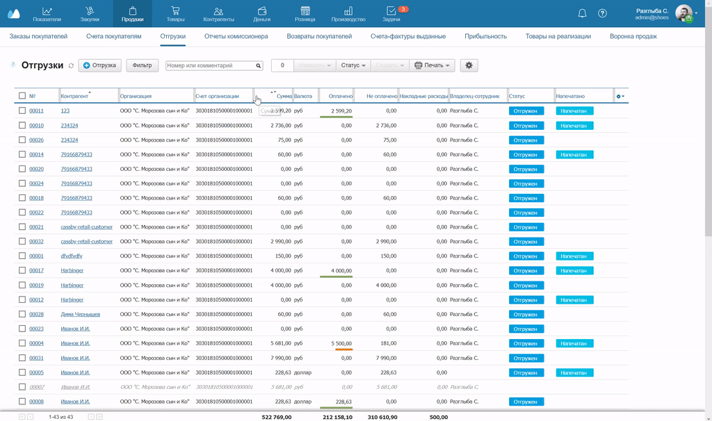
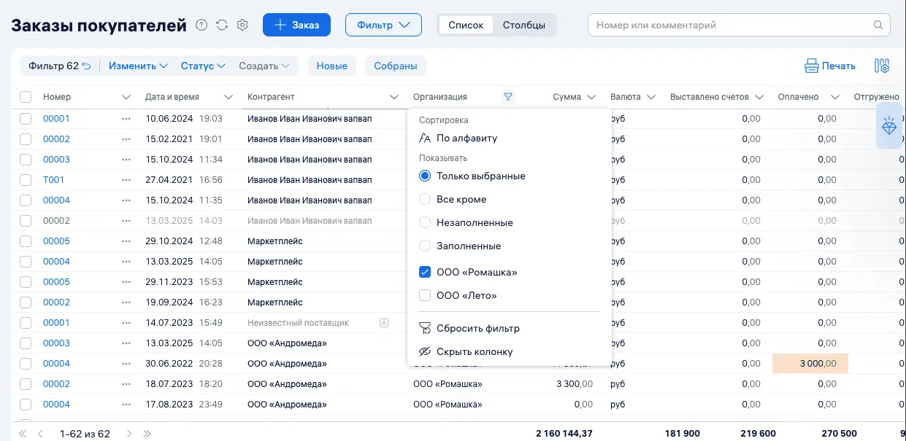
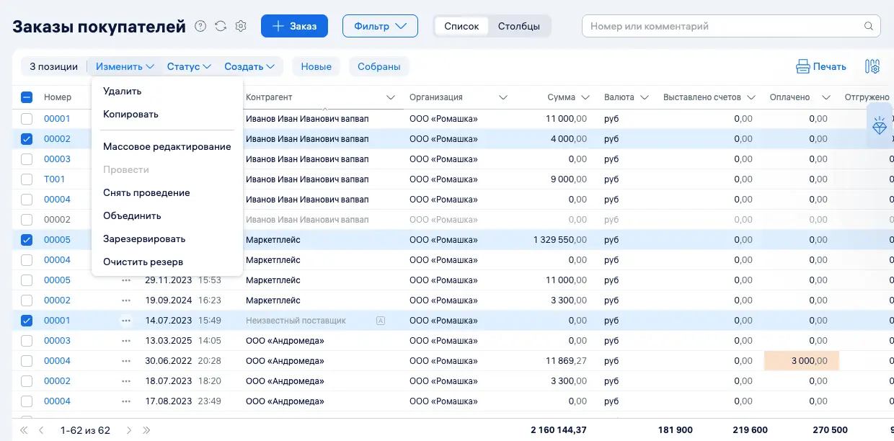
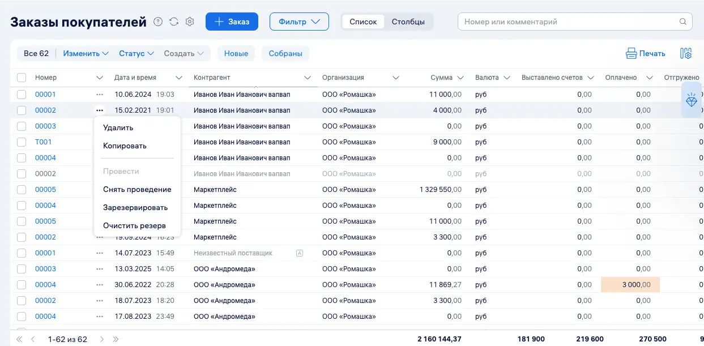
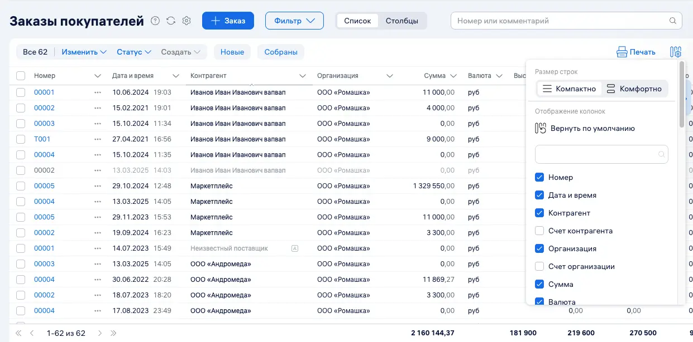

Работать с таблицами в МоемСкладе можно в двух версиях — новой и старой. При переходе на новую версию становятся доступны дополнительные возможности. Порядок работы с документами и данными остается прежним. Старая версия остается доступной еще некоторое время, но позже будет отключена.
Старая версия таблиц
В старой, привычной версии в таблицах можно настраивать колонки: менять количество строк и их ширину, менять и упорядочивать значения в списке. Рассмотрим работу с таблицами в старом дизайне на примере раздела Отгрузки.
Настройка отображения колонок
Чтобы работать только с нужными колонками, нажмите на маленькую шестеренку в правом верхнем углу таблицы. Загрузится список. Выберите колонки и уберите те, которые не потребуются. Внизу списка уточните количество строк — 25, 50 или 100.

Чтобы изменить ширину колонок, наведите стрелку мышки на серую границу между названиями колонок. Появится разделитель, которым можно передвигать вправо и влево.

Сортировка значений по возрастанию и убыванию
Чтобы упорядочить значения в колонках по возрастанию или убыванию, нажмите на поле с названием колонки. Над названием будут два маленьких треугольника-стрелки. Если их нет, значения в колонке отсортировать нельзя.
Новая версия таблиц
В новой версии таблиц помимо настроек колонок появляются возможности: фильтровать данные, выбирать строки и действия с ними, а также настраивать размер строк.
Фильтр
Данные в таблицах теперь можно фильтровать не только с помощью кнопки Фильтр, но и в заголовке колонки. Для этого необходимо выбрать в заголовке условия или значения — например, заполненные или незаполненные. В таблице отображается информация о примененных фильтрах:
- над списком показывается количество активных фильтров;
- в заголовках колонок отображаются значки фильтра;
- сохраненные фильтры теперь отображаются в области таблицы, возможности по работе с ними не изменились.

Строки
После выбора отображается количество выбранных элементов. Становятся доступны действия над строками.
Панель действий над строками теперь расположена внутри области таблицы, а не рядом с заголовком. Набор действий и их работа не изменились.

Для выполнения действий над одной строкой теперь можно воспользоваться контекстным меню.

В таблице можно настроить размер строки:
- Комфортно — увеличенные отступы и комфортный размер текста;
- Компактно — больше строк на экране.
Переключение доступно в настройках таблицы. Там, как и раньше, можно указать, какие колонки показывать в таблице.
